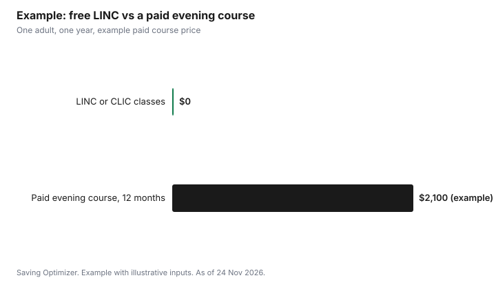

Education · Canada
Free Language Classes for Newcomers and Family Members

In Canada, permanent residents and protected persons can take English or French classes for free through federally funded programs called LINC (Language Instruction for Newcomers to Canada) and CLIC (Cours de langue pour les immigrants au Canada). There are in-person, online and home study options. You start with a free language assessment, which places you at a Canadian Language Benchmark level and refers you to a class. Family members who don't qualify for LINC can often find free classes through school boards, libraries or provincial programs.
Key takeaways
- LINC (English) and CLIC (French) are free for adult permanent residents and protected persons, according to IRCC.
- Children and youth learn English and French at school instead.
- LINC Home Study offers online learning; the Ontario program teaches CLB levels 3 and 4.
- The first step is a language assessment at an assessment centre, which confirms eligibility and your level.
- Example: a year of free LINC classes saves about $2,100 compared with an example paid evening course.
LINC and CLIC
LINC and CLIC classes are funded by Immigration, Refugees and Citizenship Canada (IRCC) and run by settlement agencies, colleges and school boards across the country. Quebec runs its own French classes for immigrants through the provincial government, and outside Quebec CLIC is the French option. Classes cover listening, speaking, reading and writing, and many focus on everyday life and work. Some providers offer child minding while parents attend, which can make classes possible for families with young children.
Eligibility
IRCC says you can take government-funded language classes if you're an adult permanent resident or protected person. Canadian citizens, including newcomers who have already become citizens, and temporary residents such as international students and most work permit holders generally aren't eligible for LINC. LINC Home Study, the online and distance option, is described by IRCC as serving permanent residents and Convention refugees who are 18 or older.
Online options
LINC Home Study lets you learn from home with an instructor, on a schedule that works around a job or family. The Ontario LINC Home Study program says it teaches Canadian Language Benchmark levels 3 and 4, so learners at higher levels may be referred elsewhere. Many settlement agencies also run online LINC classes in real time. Ask the assessment centre what's available for your level.
Costs
| Item | Cost | Notes |
|---|---|---|
| LINC or CLIC classes | Free for eligible permanent residents and protected persons | Funded by IRCC |
| Language assessment | Free | Required before referral |
| Transit to class | Your transit fare | Some providers have online classes |
| IELTS, CELPIP or TEF tests for immigration or citizenship | Not free | Book separately with the test provider |
| Private tutoring | Paid | Optional |
The classes are free, but official language tests used for immigration applications, such as IELTS, CELPIP or TEF, are not covered. For citizenship, adults 18 to 54 must show language ability, and a LINC or CLIC certificate at CLB 4 or higher can be one way to prove it. Check IRCC's citizenship page for the accepted proof.
Signing up
- Find a language assessment centre near you through IRCC's settlement services finder.
- Book a free assessment. Bring your permanent resident card or proof of protected person status.
- Get your Canadian Language Benchmark results and a referral.
- Choose in-person, online or home study, and ask about child minding if you need it.
- Keep your certificate when you finish a level. It can help with citizenship or job applications.
For family members who don't qualify
If a spouse, parent or adult child isn't eligible for LINC, look at school board adult ESL classes, public library conversation circles and settlement agency programs funded by the province. Many of these are free. Public libraries also offer free language learning apps and databases with a library card. See free online courses through your library.

In the example, an adult attends free LINC classes for a year instead of an example paid evening course at $175 a month. The saving is about $2,100. Transit and a few materials are the only costs.
Sources
- Immigration, Refugees and Citizenship Canada, Language classes funded by the Government of Canada (free for permanent residents and protected persons), checked 24 Nov 2026.
- IRCC Help Centre, Who is eligible to take government-funded language classes?, checked 24 Nov 2026.
- IRCC, LINC Home Study (permanent residents and Convention refugees 18+), checked 24 Nov 2026.
- LINC Home Study (Ontario), Getting Started (CLB levels 3 and 4; language assessment first), checked 24 Nov 2026.
Frequently asked questions
Who can take free LINC classes?
IRCC says adult permanent residents and protected persons can take government-funded English or French classes at no cost. Children learn English and French at school.
Can Canadian citizens take LINC classes?
Generally no. LINC is for permanent residents and protected persons. Citizens can look for free school board ESL classes, library programs or provincially funded classes.
Is there an online LINC program?
Yes. LINC Home Study offers learning from home with an instructor. The Ontario LINC Home Study program teaches Canadian Language Benchmark levels 3 and 4.
How do I sign up for LINC?
Book a free language assessment at an assessment centre. It confirms your eligibility, measures your level and refers you to a class.
Are IELTS or CELPIP tests free for newcomers?
No. Official language tests for immigration or citizenship are paid separately. LINC classes are free, but tests are not.
Researched and drafted with AI assistance and fact-checked against official Canadian sources. How we create content.
Note: Eligibility is set by IRCC and can change. Confirm with a language assessment centre. Education only.